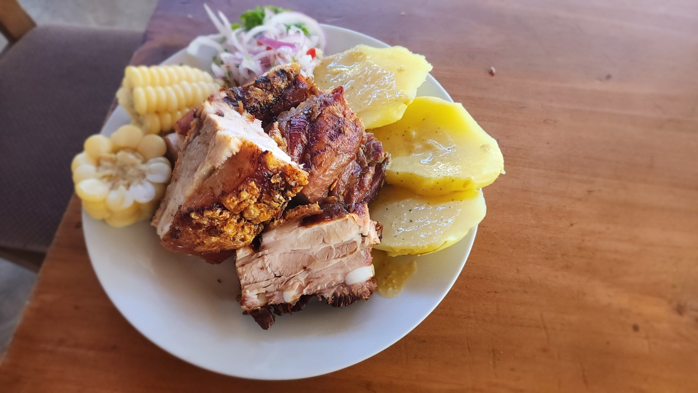
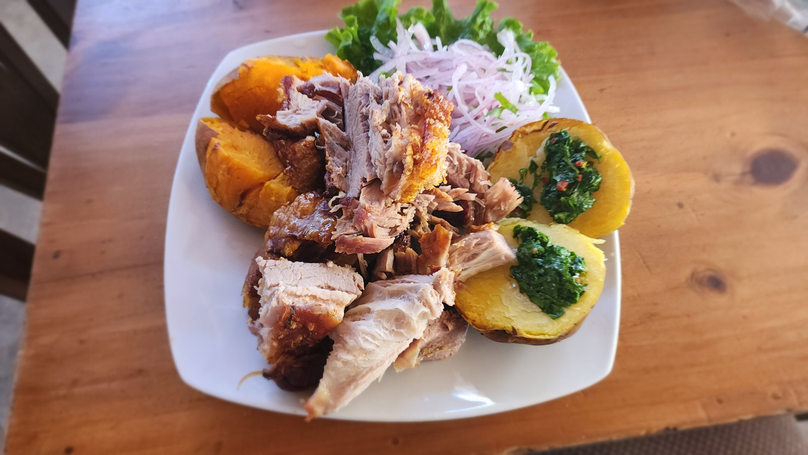
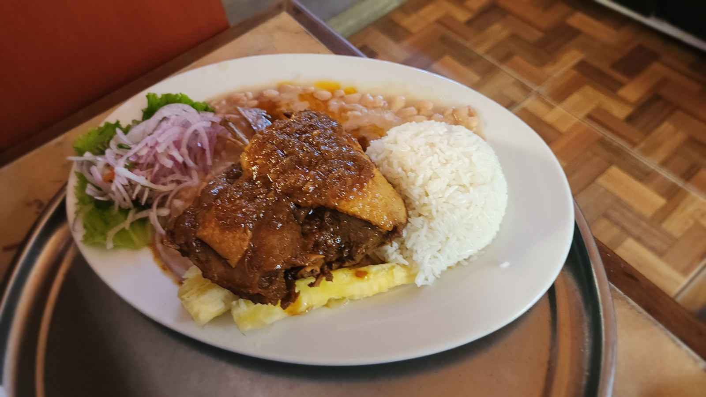
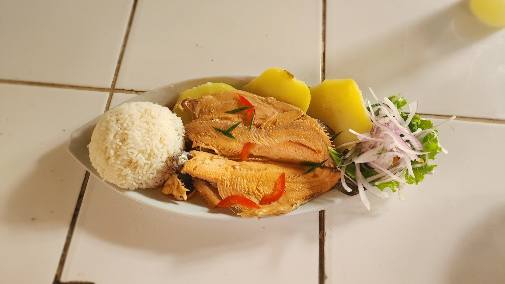

Ambiente natural
Comedor al aire libre, zonas techadas y áreas de jardín.

SAYÁN · VALLE DE HUAURA
Sabores que se disfrutan rodeados de naturaleza.
Una mesa generosa, cocina peruana y tiempo para los tuyos. Bienvenidos a La Cabaña de Don Víctor.
Descubre nuestro restaurante ↓
BIENVENIDOS A NUESTRA MESA
En el valle de Huaura, la cocina y la tradición familiar se encuentran.
La Cabaña de Don Víctor recibe a familias y viajeros en la ruta hacia Sayán. Nuestra propuesta reúne platos campestres, desayunos y sabores peruanos para disfrutar sin prisa.
Conoce nuestra historia →LA EXPERIENCIA
Comedor al aire libre, zonas techadas y áreas de jardín.
Cocina tradicional con ingredientes locales y frescos.
Espacio de recreación para que los pequeños también disfruten.
Atención a grupos y reuniones, previa consulta de disponibilidad.
DE NUESTRA COCINA
Una de las especialidades campestres de nuestra carta.
Consultar
Tradición y sabor para disfrutar en el almuerzo.
S/ 40.00
Una opción clásica de nuestra selección de truchas.
S/ 36.00MOMENTOS ESPECIALES
Reuniones familiares, cumpleaños y paseos en grupo. Conversemos sobre tu próxima celebración.
Descubre nuestros eventos ↗TE ESPERAMOS
Consulta horarios, disponibilidad y detalles para tu visita.
Contactar al restaurante ↗